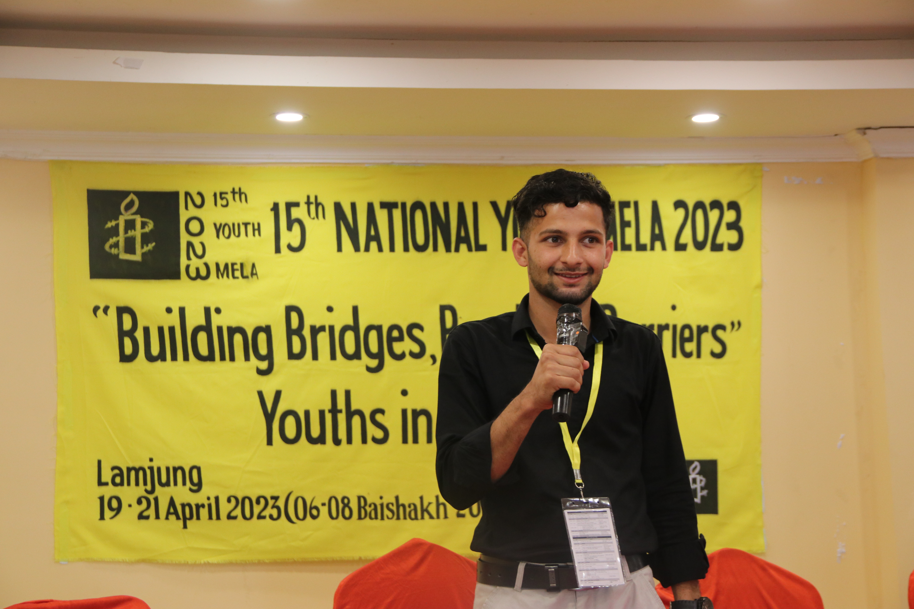
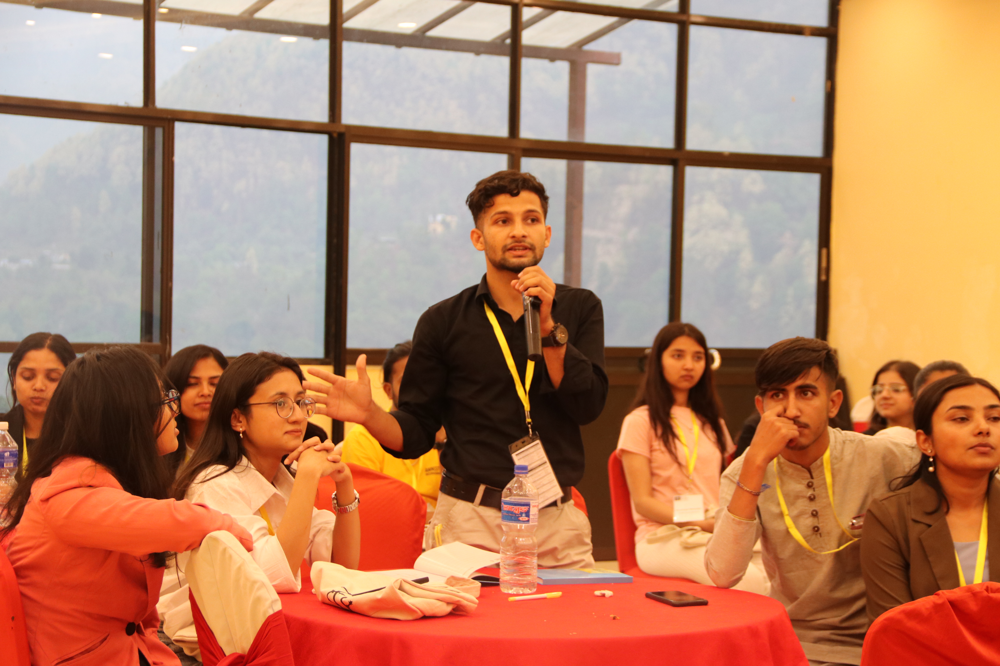
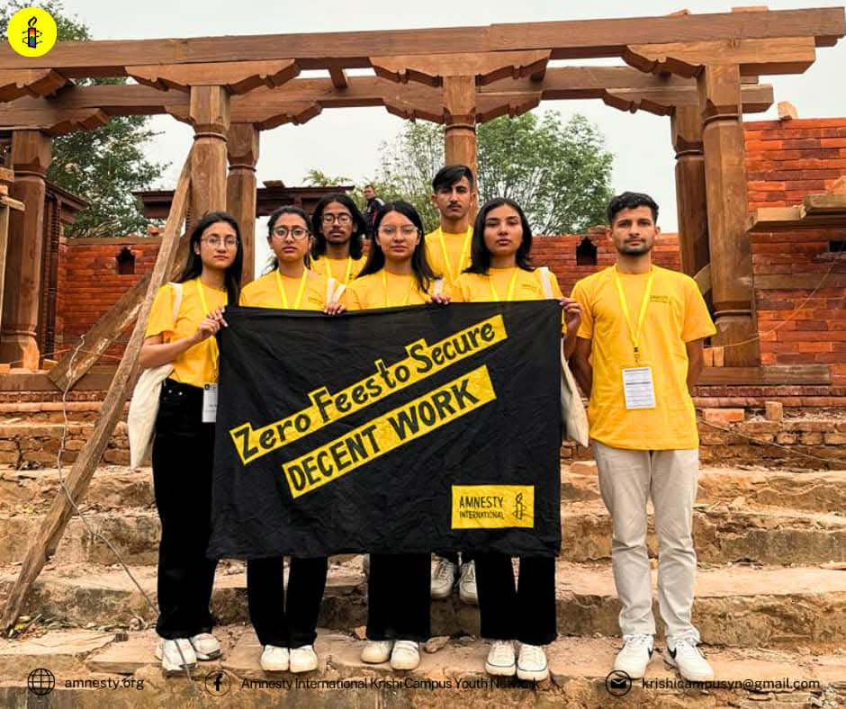
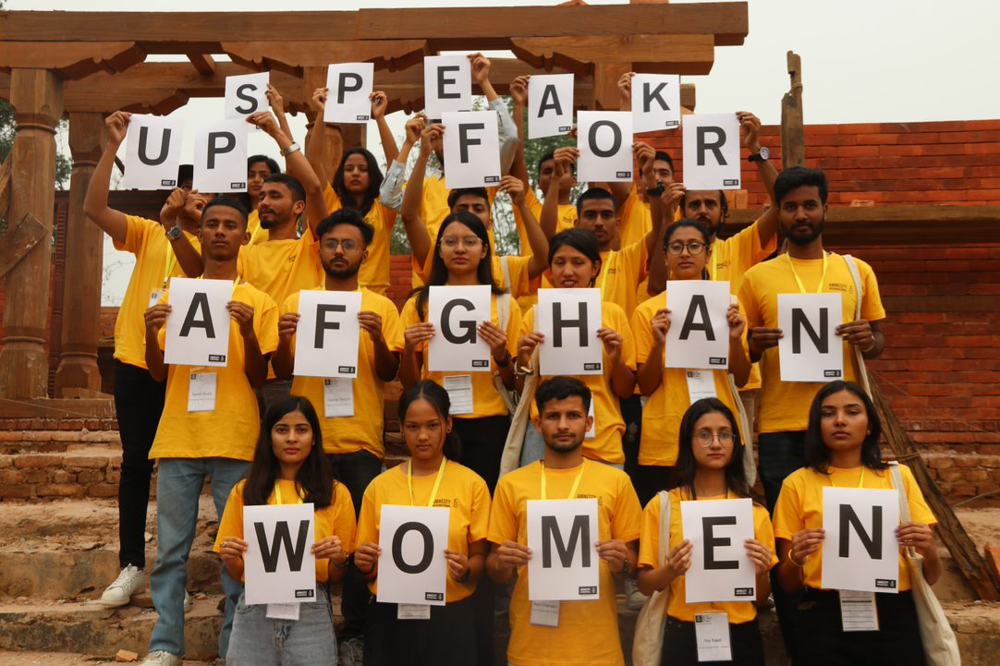

15th Youth Discussion Forum — Amnesty International Nepal Section
The Amnesty International Nepal Section annually hosts the Amnesty Youth Mela, a dynamic youth discussion forum that brings together participants from diverse youth networks across the nation. This 15th Youth Mela was a three-day residential program featuring panel discussions, dialogue sessions, report reflections, and forward planning for empowering youth voices.
The forum created a safe and inspiring space for young people to share perspectives on human rights, engage in collective action, and build strategies for the future. With sessions covering rights education, advocacy, peaceful assembly, and solidarity campaigns, the mela amplified youth leadership in advancing justice and human dignity.



